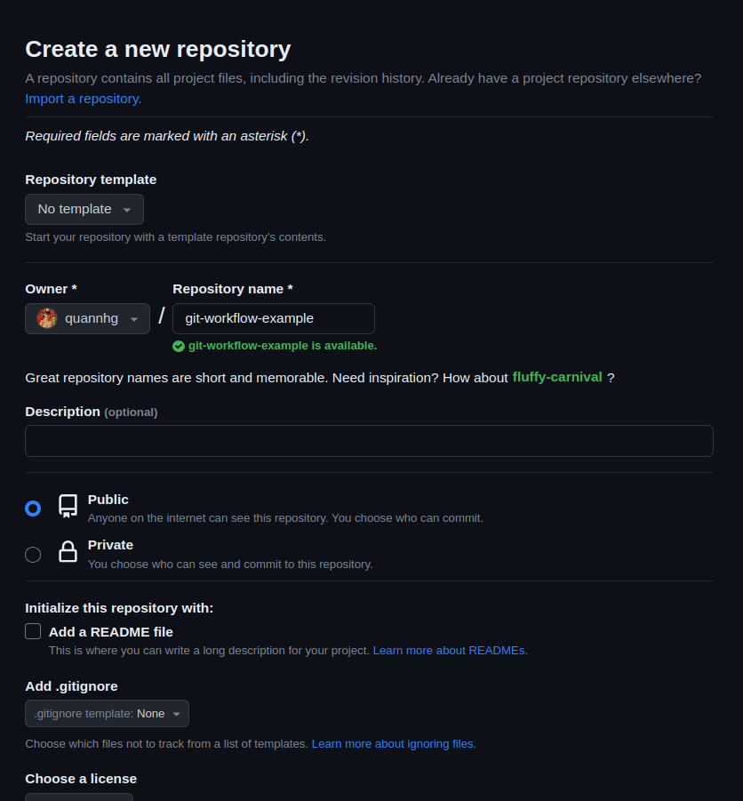

Git workflow in practice¶
This is the sample project for Git workflow article. If you haven't already read it, it's recommended to give it a glance before attempting this project. Upon completion of this project, you will:
- Gain a clearer understanding of how Git workflow operates in practice.
- Be exposed to a simple debugging process.
Setup project¶
First, make sure you already have Git installed on your computer and a GitHub account. To check git is installed:
If this is the first time you use git, you need to set a git username and git email, you can remove the —global flag if you want to set a user name and user email for a specific repository:
Check you already set the git user name and user email:
You need to create a repository in GitHub, let's give it a git-workflow-example name.

Tick at the “Add a README file” option. Let all remaining setting is default then click the "Create repository" button.

Save the link to the repository, you will need it later, with this tutorial, we will use HTTPS.
In the upper left, click on the branch button.
Click on the View all branches.
Click New branch, naming branch is staging, source is main.
Go to Settings → Branches → Add rule.
Create two sets of rules for main and staging, with the following rule chosen:
- Require a pull request before merging.
- Require status checks to pass before merging.
- Require branches to be up to date before merging.

- Require branches to be up to date before merging.
These rules make sure our project follows the git workflow.
Open the terminal in your computer, clone the repository you have just created then change the directory to it:
Create new feature¶
Add hello world line¶
In this example, the image you are given the task of adding “Hello World!” to the README.md file
Before starting, we need to have the staging branch in the local repository:
First, we need to create a new branch for this feature:
Add a line to README.md:
Commit the current workspace to the local repository:
Create a new branch and push your change to GitHub:
This may ask you for credentials if this is the first time you are using Git, you can follow this to create a GitHub personal access token to identify.
Notice: GitHub removed Support for password authentication on August 13, 2021.
Before identifying, you can run this to avoid entering credentials multiple times:
Go to your project in GitHub and create a Pull Request. Changing base branch to staging.

In practice, you will receive some reviews from others. For now, merge the new branch to staging then delete it.

Add release GitHub action¶
This time, you are asked to add GitHub action to release a new version whenever the staging branch is merged to the main branch.
If you want to know more about GitHub action, try visiting this.
Create a new feature branch:
The branch feature/adding-hello-world-line has been merged to staging, so you can delete it:
To create a GitHub action, first let’s create a .github folder, create a workflows folder in .github:
In the workflows folder, create a file name release.yml and give the file permission to edit content:
You can use any editor you want, this tutorial will use vim to change file content.
Open file with Vim:
Paste the content below to release.yml:
name: release
on:
push:
branches:
- main
paths-ignore:
- '*.md'
env:
REGISTRY: ghcr.io
ORG_USERNAME: ${{ github.actor }}
permissions:
contents: write
pull-requests: write
packages: write
jobs:
release:
runs-on: ubuntu-latest
outputs:
build: ${{ steps.release.outputs.release_created }}
tag_name: ${{ steps.release.outputs.tag_name }}
steps:
- uses: google-github-actions/release-please-action@v3
id: release
with:
release-type: simple
pull-request-header: 'Bot (:robot:) requested to create a new release on ${{ github.ref_name }}'
Entering :wq to save and close the file.
Commit the change and push the new feature branch to the remote repo:
git add .
git commit -m "feat(github action): implement github action for release"
git push origin -u feature/add-release-action
Go to GitHub, create and merge a pull request of the new branch to staging.

To GitHub action can release a new version in your repository, you need to allow action can create and approve pull requests.
Go to the settings of your repository.
Go to Action > General, and tick “Allow GitHub Actions can create pull requests or submit approving pull request reviews” at the end of the page. Save the setting.

Okay, now GitHub action will auto-release a new version of our app whenever any branch merges with the main branch.
Release new version¶
It may need more features, and more processes to merge code from staging to main and release a new version. In this tutorial, simply create a pull request and merge staging to the main.

The GitHub action will create new pull request with information about our new release, and merge it to the main.

You have just finished creating a new version using the git workflow. The CHANGELOG.md file contains information on our releases.

Hotfix and Bugfix¶
About the problem¶
Image your co-worker’s release a new version containing a script to automate adding a new line to the content of the README.md file.
The expected render result is.

Let's see the repository.

Oop! The rendered result is different from what we expected.
Fork repository¶
In this section, we will address this bug using a Git workflow. Since we don't have permission to directly modify this repository, we will fork it, make the necessary changes, push them, and create pull requests.
Click the “Fork” button in the upper right, and give it a new name git-workflow-sample to distinguish the one you created above. Let all remaining setting is the default.
Clone the new repository we have just forked to make some changes in that code:
Hotfix branch¶
The first thing we need to do when our application exhibits incorrect behavior is to resolve the issue as quickly as possible, ensuring that users can continue using our service.
See the CHANGELOG.md to know more details about your co-worker’s release.

We will create a new hotfix branch, reverting back to version 1.0.0, to ensure that users can continue using our service before your co-worker's script is added.
See the history of commits:

We will revert the code to version 1.0.0 is released:
Let's see the content of README.md:
Continue revert the code:
An editor will show, by default, it will be nano, press Ctrl + O → Enter → Ctrl + X to save and out of the editor.
Push our change to the remote repository and create a new pull request:
This will create a hotfix/back-to-before-newline-script-is-added branch in your remote repository and push your code to this branch.
Create pull requests to the main and staging branches. Our user can continue using our service after your pull request is approved and merged.

Bugfix branch¶
After making a hotfix to keep our service still working, we need to make deep remediation to root the problem and avoid it happening again in the future.
It seems the newline script is overwritten instead of appending the newline to it, let's see the script in detail and fix the problem.
The image of the hotfix branch you have just created is approved and merged with the main and staging branch. Following the git workflow, you will create a bug fix branch from the staging branch, but for now, we make a new bugfix branch from the hotfix branch.
Make sure you are currently in the hotfix branch:
Create a new bugfix branch:
Revert branch to the script is done by your co-worker:
First, recover the content of README.md:
See the current content of README.md:

Then see the content of newline.sh:

In the "append the new text to the file" section, your co-worker used the '>' operator, which overwrites the content of the file. Try changing it to the '>>' operator to see if it resolves the problem.
Give newline.sh file permission to write and execute:
Open file with Vim:
Enter i to access insert mode, change > to >> operator
Press the “Esc” then type :wq to save the change, and close the file.
Execute the script and see if it works as we expect:
See content of README.md:

Nice, now the script works correctly.
Commit the change, and push it to the remote repository.
git add .
git commit -m 'fix(newline.sh): replace > by >> to let newline is append to exist README.md content'
git push -u origin bugfix/let-newline-script-append-newline-to-README.md-file
Create a pull request to merge your change to the staging branch

Good job! You have just completely debugged a problem with the git workflow.
Created: October 20, 2023